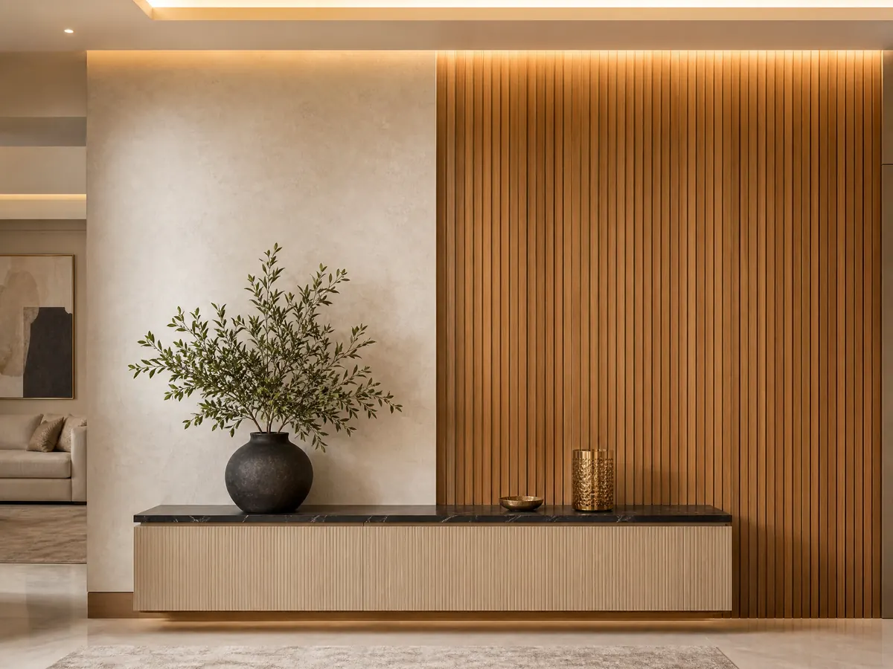

تركيب تكسيات خشب طبيعي
تركيب تكسيات خشب طبيعي
تركيب تكسيات خشب طبيعي يمنح المكان فخامة ودفئًا مميزًا، مع تنوع التصاميم وجودة الخامات، ليجمع بين الجمال العملي والمتانة طويلة الأمد بسهولة رائعة
تُعد الديكورات الخشبية من أبرز عناصر الجمال والفخامة في تصميم المنازل الحديثة، حيث تضيف لمسة دافئة وأنيقة تعكس الذوق الرفيع، ويأتي تركيب تكسيات خشب طبيعي كخيار مثالي لمن يبحث عن مزيج بين الجمال والمتانة، خاصة مع تنوع التصاميم والألوان التي تناسب مختلف المساحات.
كما أن الاعتماد على شركات متخصصة في تركيب تكسيات خشب طبيعي يضمن الحصول على نتائج احترافية تدوم لسنوات طويلة دون الحاجة إلى صيانة مستمرة، لذلك أصبح هذا النوع من الديكور خيارًا شائعًا في الفلل والمنازل الفاخرة والمكاتب الراقية.
تركيب تكسيات خشب طبيعي
يُعتبر تركيب تكسيات خشب طبيعي من أفضل الحلول العصرية التي تضيف لمسة فخامة للمكان، حيث يتم استخدام ألواح خشبية طبيعية عالية الجودة تُركب بطريقة احترافية تضمن الثبات والجمال في آنٍ واحد، كما تساعد هذه التكسيات في تحسين عزل الصوت والحرارة داخل المكان.
وتتميز أعمال تركيب تكسيات الخشب الطبيعي بالمرونة في التصميم، حيث يمكن تنفيذ أشكال كلاسيكية أو مودرن حسب رغبة العميل، مما يجعلها مناسبة لجميع الأذواق والمساحات المختلفة سواء في المنازل أو الشركات أو الفلل الفاخرة.
ومن أبرز مميزات تركيب تكسيات الخشب الطبيعي التي تتوفر في شركة ديكورات الأحلام يأتي:
مظهر فاخر وجذاب يرفع من قيمة المكان.
عزل حراري وصوتي ممتاز.
عمر افتراضي طويل عند التركيب الصحيح.
إمكانية تنفيذ تصاميم متنوعة.
سهولة التنظيف والصيانة الدورية.
كما أن اختيار خامات جيدة أثناء تركيب تكسيات الخشب الطبيعي يلعب دورًا مهمًا في الحفاظ على الشكل العام لفترة طويلة دون تأثر بالعوامل البيئية.
شركة تركيب تكسيات خشبية
عند البحث عن أفضل نتائج، فإن اختيار شركة متخصصة في تركيب تكسيات خشب طبيعي يُعد خطوة أساسية لضمان الجودة والدقة في التنفيذ، حيث تعتمد شركة ديكورات الأحلام المحترفة على فريق من الفنيين ذوي الخبرة في التعامل مع مختلف أنواع الأخشاب والتصاميم الحديثة.
توفر الشركة تركيب تكسيات الخشب الطبيعي خدمات متكاملة تبدأ من المعاينة الميدانية، مرورًا باختيار التصميم المناسب، وصولًا إلى التنفيذ النهائي بأعلى مستوى من الاحترافية، مع الالتزام بالمواعيد والدقة في التفاصيل.
ومن خدمات تركيب تكسيات خشبية التي توفرها الشركة للعملاء:
تصميم وتنفيذ ديكورات خشبية داخلية وخارجية.
تركيب تكسيات الخشب الطبيعي بجودة عالية.
تقديم استشارات لاختيار الأنسب للمساحة.
استخدام أحدث الأدوات والتقنيات.
الالتزام بالمواعيد وجودة التنفيذ.
للحصول على أفضل خدمة في تركيب تكسيات الخشب الطبيعي، يمكنكم التواصل عبر الرقم التالي: 0531169312، كما أن الشركات المتميزة تحرص على استخدام أفضل أنواع الأخشاب الطبيعية التي تتحمل العوامل المختلفة وتحتفظ بجمالها لسنوات طويلة.
اقرأ أيضا: معلم شيبورد الرياض: تصاميم عصرية وفخامة دائمة | +966 53 116 9312
أنواع تكسيات الخشب الطبيعي
تعتمد شركة ديكورات الأحلام على أنواع متعددة من الأخشاب المستخدمة في تركيب وتنفيذ تكسيات خشب طبيعي لتناسب مختلف الاحتياجات والميزانيات، حيث تختلف من حيث الجودة والشكل واللون، مما يمنح العميل حرية اختيار التصميم المناسب لمساحته.
ويعتمد اختيار النوع المناسب في تركيب وتشطيب تكسيات خشب طبيعي على عدة عوامل مثل طبيعة المكان، درجة الرطوبة، وطبيعة الاستخدام اليومي، لذلك يُنصح دائمًا بالاستعانة بمتخصص لتحديد الخيار الأفضل.
ومن أشهر أنواع الأخشاب المستخدمة في تركيب وتصميم تكسيات خشب طبيعي يأتي:
خشب الزان: يتميز بالقوة والمتانة.
خشب السويدي: مناسب للديكورات الحديثة.
خشب البلوط: فاخر وذو مظهر راقٍ.
خشب MDF مع قشرة طبيعية.
خشب طبيعي معالج ضد الرطوبة.
يساعد اختيار النوع المناسب في نجاح عملية تركيب تكسيات الخشب الطبيعي وتحقيق أفضل نتيجة جمالية وعملية في نفس الوقت.
خطوات تركيب تكسيات خشب طبيعي
تمر عملية تركيب تكسيات الخشب الطبيعي بعدة مراحل أساسية لضمان الحصول على نتيجة مثالية تدوم طويلًا، حيث تبدأ بالتخطيط وتنتهي بالتشطيب النهائي الذي يعكس جودة العمل.
ويُعد الالتزام بالخطوات الصحيحة أثناء تركيب وتنفيذ تكسيات خشب طبيعي أمرًا ضروريًا لتفادي أي مشاكل مستقبلية مثل التشققات أو عدم الثبات، ومن خطوات التركيب الأساسية التي تعتمد عليها شركة ديكورات الأحلام:
معاينة الموقع وتحديد المقاسات.
اختيار التصميم والخامة المناسبة.
تجهيز الجدران أو الأسطح.
تركيب الهيكل الأساسي.
تثبيت ألواح الخشب بدقة.
تنفيذ التشطيبات النهائية.
كل مرحلة من هذه المراحل تلعب دورًا مهمًا في نجاح تركيب تكسيات خشب طبيعي، حيث تضمن شركة ديكورات الأحلام تنفيذًا دقيقًا يحقق الشكل النهائي المطلوب بأعلى جودة واحترافية.
اطلع على: معلم شيبورد في الرياض | +966 53 116 9312
استخدامات تكسيات الخشب الطبيعي
تُستخدم تكسيات الخشب الطبيعي في العديد من الأماكن لإضفاء لمسة جمالية مميزة، حيث أصبحت عنصرًا أساسيًا في التصميم الداخلي الحديث.
كما أن تركيب تكسيات الخشب الطبيعي لا يقتصر على الجدران فقط، بل يمتد ليشمل الأسقف والمداخل والديكورات المختلفة، مما يمنح المكان طابعًا فريدًا ومميزًا، ومن أبرز الاستخدامات:
تغطية الجدران الداخلية.
ديكورات الأسقف الخشبية.
تصميم مداخل الفلل.
تزيين غرف المعيشة.
ديكور المكاتب والشركات.
مميزات استخدام التكسيات الخشبية الطبيعية
يسهم تنوع التطبيقات في تعزيز مكانة تركيب تكسيات خشب طبيعي كخيار مثالي لمختلف المشاريع السكنية والتجارية، حيث تقدم شركة ديكورات الأحلام حلولاً مبتكرة تجمع بين الجمال والعملية والجودة العالية في مجال الديكورات العصرية.
أيضًا تُعتبر التكسيات الخشبية الطبيعية من الحلول المميزة التي تضيف أناقة ودفئًا لأي مساحة، سواء كانت سكنية أو تجارية، فهي تجمع بين الجمال الطبيعي والقوة العملية، مما يجعلها خيارًا مثاليًا لمحبي الفخامة والبساطة في آنٍ واحد.
وتحرص شركة ديكورات الأحلام على تقديم تصاميم متنوعة تلبي مختلف الأذواق، مع تنفيذ احترافي يبرز جمال الخشب ويمنح المكان طابعًا فريدًا يدوم طويلًا، كما تساعد هذه التكسيات في خلق بيئة مريحة تعكس الذوق الرفيع وتواكب أحدث اتجاهات الديكور.
تضفي لمسة جمالية طبيعية فاخرة على المساحات.
تتمتع بمتانة عالية وعمر استخدام طويل.
توفر مستوى جيدًا من العزل الحراري والصوتي.
تناسب مختلف أنماط الديكور العصري والكلاسيكي.
سهلة العناية والتنظيف دون الحاجة لصيانة معقدة.
نصائح للحفاظ على التكسيات الخشبية
لضمان بقاء التكسيات الخشبية بحالة ممتازة، يجب اتباع بعض الإرشادات البسيطة التي تساعد في الحفاظ على جمالها لأطول فترة ممكنة.
كما أن العناية الجيدة بعد تركيب وتنفيذ تكسيات خشب طبيعي تضمن تقليل الحاجة إلى الصيانة أو الاستبدال، مما يوفر الوقت والتكاليف على المدى الطويل، لذا ينبغي اتباع بعض النصائح المهمة:
تنظيف الأسطح بانتظام بمواد مناسبة.
تجنب التعرض المباشر للماء.
استخدام مواد حماية للخشب.
تهوية المكان بشكل جيد.
فحص التكسيات بشكل دوري.
يساهم الالتزام بهذه الإرشادات في الحفاظ على جودة تركيب تكسيات الخشب الطبيعي وتعزيز متانتها لفترة أطول، كما تضمن شركة ديكورات الأحلام تطبيق أفضل الممارسات لزيادة عمرها الافتراضي وكفاءتها.
الخاتمة
في النهاية، يُعد تركيب تكسيات خشب طبيعي من أفضل الحلول التي تجمع بين الجمال والمتانة، حيث يمنح المكان مظهرًا راقيًا يدوم طويلًا، ومع اختيار شركة متخصصة وخامات عالية الجودة، يمكن الحصول على نتائج مثالية تضيف قيمة حقيقية لأي مساحة.
الأسئلة الشائعة
هل تركيب تكسيات خشب طبيعي مناسب لجميع الأماكن؟
بالتأكيد يمكن استخدامه في العديد من الأماكن المختلفة، لكن من الضروري اختيار نوع الخشب المناسب وفقًا لطبيعة الموقع وظروفه، مثل الرطوبة والحرارة، لضمان أفضل أداء ومتانة تدوم لفترات طويلة دون تأثر.
كم تستغرق مدة تركيب تكسيات خشب طبيعي؟
تتباين مدة التنفيذ وفقًا لحجم المساحة وتعقيد التصميم المطلوب، إلا أنها في الغالب تستغرق من يومين وقد تمتد إلى عدة أيام، وذلك لضمان دقة العمل وجودة التشطيب وتحقيق أفضل النتائج النهائية.
هل يحتاج الخشب الطبيعي إلى صيانة مستمرة؟
لا يتطلب الخشب الطبيعي صيانة مستمرة بشكل مكثف، إلا أنه يُنصح بالاهتمام بتنظيفه بشكل دوري ومنتظم للحفاظ على رونقه وجماله، وضمان بقائه بحالة ممتازة تعكس أناقة المكان لفترة طويلة دون تدهور ملحوظ.
فيما يلي إجابات مختصرة عن أكثر الأسئلة شيوعًا حول هذا الموضوع، مع إمكانية التواصل للحصول على تفاصيل تناسب مشروعك.
هل تبحث عن تنفيذ احترافي لمشروعك؟
نحن في ديكورات الأحلام نوفر لك أفضل الخامات وأمهر الفنيين في الرياض.
تواصل معنا عبر واتساب